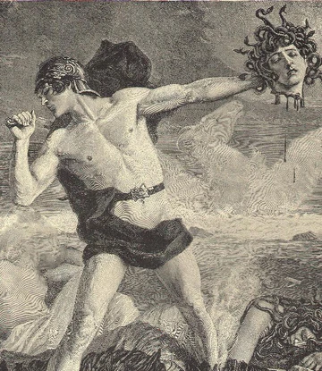

Hércules o Heracles, siendo una metátesis del nombre griego, era hijo de Júpiter, el equivalente
romano del dios griego Zeus, y la mortal Alcmena. Llevó a cabo doce grandes trabajos, llamados Los
doce trabajos de Heracles y fue divinizado. Se caracterizaba por su monstruosa fuerza física
sobrenatural y por amar a la humanidad.
Los romanos adoptaron la versión griega de su vida y trabajos sin cambios esenciales, relacionando
al héroe con la geografía del Mediterráneo occidental
Las leyendas romanas acerca de Hércules están relacionadas con su viaje al Mediterráneo occidental
para robar el ganado de Gerión, uno de sus conocidos «doce trabajos». Al regresar, mientras
descansaba junto al Tíber, un héroe local llamado Caco, hijo de Vulcano, le robó algunas reses y las
condujo hasta su gruta. Cuando Hércules se dio cuenta, buscó el ganado robado y lo e a que los
animales se pusieron a mugir, o bien a que Caca, hermana de Caco, dijo a Hércules dónde se hallaban.
Entonces Hércules y Caco entablaron un combate en el que Caco contaba con el fuego y el humo que
brotaba de sus tres cabezas, pero Hércules lo mató con su maza. Según otra tradición, Caco se había
encerrado en su gruta cubriendo la entrada con rocas y Hércules tuvo que arrancar las rocas del
techo de la cueva para poder entrar y estrangularlo.
El más antiguo centro de culto de Hércules en Roma era el Altar Magno, que se hallaba en una llanura
entre los montes Palatino y Aventino, en el llamado Foro Boario. Allí se celebraba cada año un
sacrificio en honor de Hércules Invicto. Por otra parte, también en el Foro Boario, se conserva un
monóptero que se ha identificado como el Templo de Hércules Víctor.
Perseo (en griego antiguo, Περσεύς) es un semidiós de la mitología griega, hijo de Zeus y de la mortal Dánae y esposo de Andrómeda. La tradición le atribuía la fundación de Micenas.
Más tarde, Polidectes se enamoró de Dánae. Pensando que el joven Perseo podía ser un estorbo para sus
planes, intentó librarse de él mediante una estratagema: hizo creer a todo el mundo que pretendía
conquistar a la princesa Hipodamía y pidió a los habitantes de la isla que le entregase un regalo
cada uno como presente, para poder ofrecerlo a su vez a la princesa. Perseo dijo que no pondría
reparos para entregar cualquier cosa: incluso si hubiera de ser la cabeza de Medusa, que era una de
las tres Gorgonas y podía convertir en piedra a los hombres solo con la mirada. Polidectes aceptó
como regalos los caballos de otros habitantes de la isla, pero no aceptó los de Perseo, y le mandó
que le trajese la cabeza de la Gorgona que le había prometido.
Perseo partió, guiado por los dioses Atenea y Hermes, en busca de las hijas de Forcis: las grayas,
hermanas de las gorgonas. Las grayas eran tres ancianas que solo tenían un ojo y un diente para las
tres, y se los iban pasando una a otra. Perseo les arrebató el ojo y, a cambio de devolvérselo, las
obligó a confesar dónde vivían las ninfas, sus hermanas.
Así, Perseo encontró a las ninfas, de las que obtendría un zurrón mágico para contener la cabeza sin
peligro, unas sandalias aladas y el casco de Hades, que volvía invisible a quien lo llevara puesto.
Además, recibió de Hermes una hoz de acero (en otras versiones, de diamante), con la que podría
cortar la cabeza de Medusa, y recibió de Atenea un escudo brillante como un espejo.
Pertrechado con estos objetos, Perseo llegó a introducirse en la morada de las gorgonas, que, como
las grayas, eran hijas de Forcis. Mientras estaban dormidas las gorgonas, Perseo se acercó a ellas.
Atenea guió la mano de Perseo, que además usó como espejo el escudo de bronce que le había prestado
la diosa para ver a Medusa sin mirarla directamente. Así, Perseo alcanzó a cortar la cabeza de la
gorgona, de la que nacieron el caballo alado Pegaso y el gigante Crisaor. Esteno y Euríale, las
hermanas inmortales de Medusa, buscaron a Perseo, pero no pudieron encontrarlo porque el casco de
Hades lo hacía invisible.